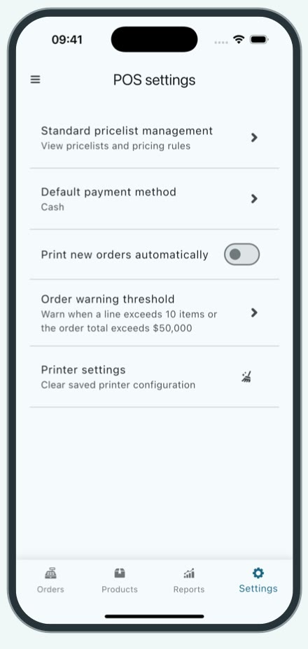

How Odeck Bridge works
For example, when a cashier changes the quantity of a product, Odoo evaluates the selected pricelist for that product, quantity and date. The mobile POS can then request a tax calculation with the unit price, taxes, currency, company, customer and refund context.


Pricelist settings in Odeck Mobile